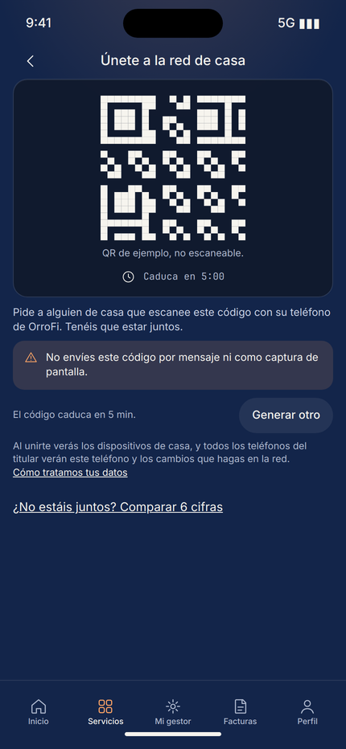

Код для нового телефона
На новом телефоне крупно горит QR-код. Пусть его считает тот, кто уже в доме: пересылать картинку сообщением не стоит.

Близкий человек входит в домашнюю сеть со своего телефона: вы показываете код, сверяете цифры и в любой момент можете закрыть доступ.
На новом телефоне крупно горит QR-код. Пусть его считает тот, кто уже в доме: пересылать картинку сообщением не стоит.

Телефон сам спрятал код, чтобы тот не остался на снимке экрана. Покажете снова, когда рядом будет свой человек.

Телефон, который уже дома, наводит камеру на код нового. Так приглашение не уходит незнакомцу.
Владелец видит, какой телефон просится в дом, и решает, впускать ли его.
Телефон принят. Остальным в сети придёт весть, что в доме появился ещё один.
Код не сошёлся, и приглашение погасло. Начать можно заново, уже глядя на оба экрана.
Шесть цифр на двух телефонах. Если они разные, перед вами не ваш дом, и приглашение лучше остановить.

Цифры разошлись, приглашение отменено. Чужой дом к вашей сети так не привяжется.
Владельцу приходит уведомление: в сеть вошёл новый телефон. Сюрпризом это не останется.
Последний вопрос, прежде чем убрать телефон из дома. Пока не подтвердите, доступ на месте.
Доступ закрыт. Этот телефон больше не видит домашнюю сеть, прежний вход для него не действует.
Телефоны, которым дом уже доверяет. Отсюда зовут нового человека или закрывают доступ тому, кто больше не должен входить.